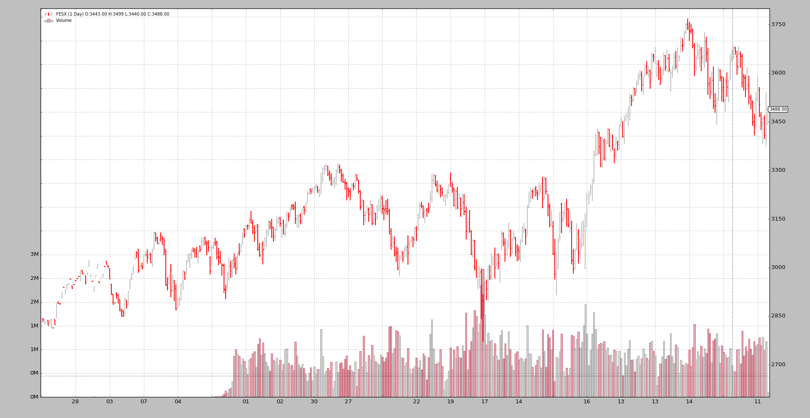

Rolling over Futures¶
Not every provider offers a continuous future for the instruments with which one can trade. Sometimes the data offered is that of the still valid expiration dates, i.e.: those still being traded
This is not so helpful when it comes to backtesting because the data is scattered over several different instruments which additionally ... overlap in time.
Being able to properly join the data of those instruments, from the past, into a continuous stream alleviates the pain. The problem:
- There is no law as to how best join the different expiration dates into a continuous future
Some literature, courtesy of SierraChart at:
- MyLink
The RollOver Data Feed¶
backtrader has added with 1.8.10.99` the possibility to join futures’ data from different expiration dates into a continuous future:
import backtrader as bt
cerebro = bt.Cerebro()
data0 = bt.feeds.MyFeed(dataname='Expiry0')
data1 = bt.feeds.MyFeed(dataname='Expiry1')
...
dataN = bt.feeds.MyFeed(dataname='ExpiryN')
drollover = cerebro.rolloverdata(data0, data1, ..., dataN, name='MyRoll', **kwargs)
cerebro.run()
Note
The possible **kwargs are explained below
It can also be done by directly accessing the RollOver feed (which is
helpful if subclassing is done):
import backtrader as bt
cerebro = bt.Cerebro()
data0 = bt.feeds.MyFeed(dataname='Expiry0')
data1 = bt.feeds.MyFeed(dataname='Expiry1')
...
dataN = bt.feeds.MyFeed(dataname='ExpiryN')
drollover = bt.feeds.RollOver(data0, data1, ..., dataN, dataname='MyRoll', **kwargs)
cerebro.adddata(drollover)
cerebro.run()
Note
The possible **kwargs are explained below
Note
When using RollOver the name is assigned using dataname. This
is the standard parameter used for all data feeds to pass the
name/ticker. In this case it is reused to assign a common name to
the complete set of rolled over futures.
In the case of cerebro.rolloverdata, the name is assigned to a
feed using name, which is already one named argument of that method
Bottomline:
Data Feeds are created as usual but ARE NOT added to
cerebroThose data feeds are given as input to
bt.feeds.RollOverA
datanameis also given, mostly for identification purposes.This roll over data feed is then added to
cerebro
Options for the Roll-Over¶
Two parameters are provided to control the roll-over process
checkdate(default:None)This must be a callable with the following signature:
checkdate(dt, d):Where:
dtis adatetime.datetimeobjectdis the current data feed for the active futureExpected Return Values:
True: as long as the callable returns this, a switchover can happen to the next futureIf a commodity expires on the 3rd Friday of March,
checkdatecould returnTruefor the entire week in which the expiration takes place.
False: the expiration cannot take place
checkcondition(default:None)Note: This will only be called if
checkdatehas returnedTrueIf
Nonethis will evaluate toTrue(execute roll over) internallyElse this must be a callable with this signature:
checkcondition(d0, d1)Where:
d0is the current data feed for the active futured1is the data feed for the next expirationExpected Return Values:
True: roll-over to the next futureFollowing with the example from
checkdate, this could say that the roll-over can only happend if the volume fromd0is already less than the volume fromd1
False: the expiration cannot take place
Subclassing RollOver¶
If specifying the callables isn’t enough, there is always the chance to
subclass RollOver. The methods to subclass:
def _checkdate(self, dt, d):Which matches the signature of the parameter of the same name above. The expected return values are also the saame.
def _checkcondition(self, d0, d1)Which matches the signature of the parameter of the same name above. The expected return values are also the saame.
Let’s Roll¶
Note
The default behavior in the sample is to use
cerebro.rolloverdata. This can be changed by passing the
-no-cerebro flag. In this case the sample uses RollOver and
cerebro.adddata
The implementation includes a sample which is available in the backtrader sources.
Futures concatenation¶
Let’s start by looking at a pure concatenation by running the sample with no arguments.
$ ./rollover.py
Len, Name, RollName, Datetime, WeekDay, Open, High, Low, Close, Volume, OpenInterest
0001, FESX, 199FESXM4, 2013-09-26, Thu, 2829.0, 2843.0, 2829.0, 2843.0, 3.0, 1000.0
0002, FESX, 199FESXM4, 2013-09-27, Fri, 2842.0, 2842.0, 2832.0, 2841.0, 16.0, 1101.0
...
0176, FESX, 199FESXM4, 2014-06-20, Fri, 3315.0, 3324.0, 3307.0, 3322.0, 134777.0, 520978.0
0177, FESX, 199FESXU4, 2014-06-23, Mon, 3301.0, 3305.0, 3265.0, 3285.0, 730211.0, 3003692.0
...
0241, FESX, 199FESXU4, 2014-09-19, Fri, 3287.0, 3308.0, 3286.0, 3294.0, 144692.0, 566249.0
0242, FESX, 199FESXZ4, 2014-09-22, Mon, 3248.0, 3263.0, 3231.0, 3240.0, 582077.0, 2976624.0
...
0306, FESX, 199FESXZ4, 2014-12-19, Fri, 3196.0, 3202.0, 3131.0, 3132.0, 226415.0, 677924.0
0307, FESX, 199FESXH5, 2014-12-22, Mon, 3151.0, 3177.0, 3139.0, 3168.0, 547095.0, 2952769.0
...
0366, FESX, 199FESXH5, 2015-03-20, Fri, 3680.0, 3698.0, 3672.0, 3695.0, 147632.0, 887205.0
0367, FESX, 199FESXM5, 2015-03-23, Mon, 3654.0, 3655.0, 3608.0, 3618.0, 802344.0, 3521988.0
...
0426, FESX, 199FESXM5, 2015-06-18, Thu, 3398.0, 3540.0, 3373.0, 3465.0, 1173246.0, 811805.0
0427, FESX, 199FESXM5, 2015-06-19, Fri, 3443.0, 3499.0, 3440.0, 3488.0, 104096.0, 516792.0
This uses cerebro.chaindata and the result should be clear:
- Whenever a data feed is over the next one takes over
- This happens always between a Friday and Monday: the futures in the samples always expire on Friday
Futures roll-over with no checks¶
Let’s execute with --rollover
$ ./rollover.py --rollover --plot
Len, Name, RollName, Datetime, WeekDay, Open, High, Low, Close, Volume, OpenInterest
0001, FESX, 199FESXM4, 2013-09-26, Thu, 2829.0, 2843.0, 2829.0, 2843.0, 3.0, 1000.0
0002, FESX, 199FESXM4, 2013-09-27, Fri, 2842.0, 2842.0, 2832.0, 2841.0, 16.0, 1101.0
...
0176, FESX, 199FESXM4, 2014-06-20, Fri, 3315.0, 3324.0, 3307.0, 3322.0, 134777.0, 520978.0
0177, FESX, 199FESXU4, 2014-06-23, Mon, 3301.0, 3305.0, 3265.0, 3285.0, 730211.0, 3003692.0
...
0241, FESX, 199FESXU4, 2014-09-19, Fri, 3287.0, 3308.0, 3286.0, 3294.0, 144692.0, 566249.0
0242, FESX, 199FESXZ4, 2014-09-22, Mon, 3248.0, 3263.0, 3231.0, 3240.0, 582077.0, 2976624.0
...
0306, FESX, 199FESXZ4, 2014-12-19, Fri, 3196.0, 3202.0, 3131.0, 3132.0, 226415.0, 677924.0
0307, FESX, 199FESXH5, 2014-12-22, Mon, 3151.0, 3177.0, 3139.0, 3168.0, 547095.0, 2952769.0
...
0366, FESX, 199FESXH5, 2015-03-20, Fri, 3680.0, 3698.0, 3672.0, 3695.0, 147632.0, 887205.0
0367, FESX, 199FESXM5, 2015-03-23, Mon, 3654.0, 3655.0, 3608.0, 3618.0, 802344.0, 3521988.0
...
0426, FESX, 199FESXM5, 2015-06-18, Thu, 3398.0, 3540.0, 3373.0, 3465.0, 1173246.0, 811805.0
0427, FESX, 199FESXM5, 2015-06-19, Fri, 3443.0, 3499.0, 3440.0, 3488.0, 104096.0, 516792.0
The same behavior. It can clearly be seen that contract changes are being made on the 3rd Friday of either Mar, Jun, Sep, Dec.
But this is mostly WRONG. backtradr cannot know it, but the author knows that
the EuroStoxx 50 futures stop trading at 12:00 CET. So even if there is a
daily bar for the 3rd Friday of the expiration month, the change is happening
too late.
Changing during the Week¶
A checkdate callabe is implemented in the sample, which calculates the date
of expiration for the currently active contract.
checkdate will allow a roll over as soon as the week of the 3rd Friday of
the month is reached (it may be Tuesday if for example Monday is a bank holiday)
$ ./rollover.py --rollover --checkdate --plot
Len, Name, RollName, Datetime, WeekDay, Open, High, Low, Close, Volume, OpenInterest
0001, FESX, 199FESXM4, 2013-09-26, Thu, 2829.0, 2843.0, 2829.0, 2843.0, 3.0, 1000.0
0002, FESX, 199FESXM4, 2013-09-27, Fri, 2842.0, 2842.0, 2832.0, 2841.0, 16.0, 1101.0
...
0171, FESX, 199FESXM4, 2014-06-13, Fri, 3283.0, 3292.0, 3253.0, 3276.0, 734907.0, 2715357.0
0172, FESX, 199FESXU4, 2014-06-16, Mon, 3261.0, 3275.0, 3252.0, 3262.0, 180608.0, 844486.0
...
0236, FESX, 199FESXU4, 2014-09-12, Fri, 3245.0, 3247.0, 3220.0, 3232.0, 650314.0, 2726874.0
0237, FESX, 199FESXZ4, 2014-09-15, Mon, 3209.0, 3224.0, 3203.0, 3221.0, 153448.0, 983793.0
...
0301, FESX, 199FESXZ4, 2014-12-12, Fri, 3127.0, 3143.0, 3038.0, 3042.0, 1409834.0, 2934179.0
0302, FESX, 199FESXH5, 2014-12-15, Mon, 3041.0, 3089.0, 2963.0, 2980.0, 329896.0, 904053.0
...
0361, FESX, 199FESXH5, 2015-03-13, Fri, 3657.0, 3680.0, 3627.0, 3670.0, 867678.0, 3499116.0
0362, FESX, 199FESXM5, 2015-03-16, Mon, 3594.0, 3641.0, 3588.0, 3629.0, 250445.0, 1056099.0
...
0426, FESX, 199FESXM5, 2015-06-18, Thu, 3398.0, 3540.0, 3373.0, 3465.0, 1173246.0, 811805.0
0427, FESX, 199FESXM5, 2015-06-19, Fri, 3443.0, 3499.0, 3440.0, 3488.0, 104096.0, 516792.0
Much better. The roll over is now happening 5 days before. A quick visual inspection of the Len indices show it. For example:
199FESXM4to199FESXU4happens at len171-172. Withoutcheckdateit happened at176-177
The roll over is happening on the Monday before the 3rd Friday of the expiration month.
Adding a volume condition¶
Even with the improvement, the situation can be further improved in that not only the date but also de negotiated volume will be taken into account. Do switch when the new contract trades more volume than the currently active one.
Let’s add a checkcondition to the mix and run.
$ ./rollover.py --rollover --checkdate --checkcondition --plot
Len, Name, RollName, Datetime, WeekDay, Open, High, Low, Close, Volume, OpenInterest
0001, FESX, 199FESXM4, 2013-09-26, Thu, 2829.0, 2843.0, 2829.0, 2843.0, 3.0, 1000.0
0002, FESX, 199FESXM4, 2013-09-27, Fri, 2842.0, 2842.0, 2832.0, 2841.0, 16.0, 1101.0
...
0175, FESX, 199FESXM4, 2014-06-19, Thu, 3307.0, 3330.0, 3300.0, 3321.0, 717979.0, 759122.0
0176, FESX, 199FESXU4, 2014-06-20, Fri, 3309.0, 3318.0, 3290.0, 3298.0, 711627.0, 2957641.0
...
0240, FESX, 199FESXU4, 2014-09-18, Thu, 3249.0, 3275.0, 3243.0, 3270.0, 846600.0, 803202.0
0241, FESX, 199FESXZ4, 2014-09-19, Fri, 3273.0, 3293.0, 3250.0, 3252.0, 1042294.0, 3021305.0
...
0305, FESX, 199FESXZ4, 2014-12-18, Thu, 3095.0, 3175.0, 3085.0, 3172.0, 1309574.0, 889112.0
0306, FESX, 199FESXH5, 2014-12-19, Fri, 3195.0, 3200.0, 3106.0, 3147.0, 1329040.0, 2964538.0
...
0365, FESX, 199FESXH5, 2015-03-19, Thu, 3661.0, 3691.0, 3646.0, 3668.0, 1271122.0, 1054639.0
0366, FESX, 199FESXM5, 2015-03-20, Fri, 3607.0, 3664.0, 3595.0, 3646.0, 1182235.0, 3407004.0
...
0426, FESX, 199FESXM5, 2015-06-18, Thu, 3398.0, 3540.0, 3373.0, 3465.0, 1173246.0, 811805.0
0427, FESX, 199FESXM5, 2015-06-19, Fri, 3443.0, 3499.0, 3440.0, 3488.0, 104096.0, 516792.0
Even better*. We have moved the switch date to the Thursday before the well known 3rd Friday of the expiration month
This should come to no surprise because the expiring future trades a lot less hours on that Friday and the volume must be small.
Note
The roll over date could have also been set to that Thursday by the
checkdate callable. But that isn’t the point of the sample.
Concluding¶
backtrader includes now a flexible mechanism to allow rolling over futures to create a continuous stream.
Sample Usage¶
$ ./rollover.py --help
usage: rollover.py [-h] [--no-cerebro] [--rollover] [--checkdate]
[--checkcondition] [--plot [kwargs]]
Sample for Roll Over of Futures
optional arguments:
-h, --help show this help message and exit
--no-cerebro Use RollOver Directly (default: False)
--rollover
--checkdate Change during expiration week (default: False)
--checkcondition Change when a given condition is met (default: False)
--plot [kwargs], -p [kwargs]
Plot the read data applying any kwargs passed For
example: --plot style="candle" (to plot candles)
(default: None)
Sample Code¶
from __future__ import (absolute_import, division, print_function,
unicode_literals)
import argparse
import bisect
import calendar
import datetime
import backtrader as bt
class TheStrategy(bt.Strategy):
def start(self):
header = ['Len', 'Name', 'RollName', 'Datetime', 'WeekDay', 'Open',
'High', 'Low', 'Close', 'Volume', 'OpenInterest']
print(', '.join(header))
def next(self):
txt = list()
txt.append('%04d' % len(self.data0))
txt.append('{}'.format(self.data0._dataname))
# Internal knowledge ... current expiration in use is in _d
txt.append('{}'.format(self.data0._d._dataname))
txt.append('{}'.format(self.data.datetime.date()))
txt.append('{}'.format(self.data.datetime.date().strftime('%a')))
txt.append('{}'.format(self.data.open[0]))
txt.append('{}'.format(self.data.high[0]))
txt.append('{}'.format(self.data.low[0]))
txt.append('{}'.format(self.data.close[0]))
txt.append('{}'.format(self.data.volume[0]))
txt.append('{}'.format(self.data.openinterest[0]))
print(', '.join(txt))
def checkdate(dt, d):
# Check if the date is in the week where the 3rd friday of Mar/Jun/Sep/Dec
# EuroStoxx50 expiry codes: MY
# M -> H, M, U, Z (Mar, Jun, Sep, Dec)
# Y -> 0, 1, 2, 3, 4, 5, 6, 7, 8, 9 -> year code. 5 -> 2015
MONTHS = dict(H=3, M=6, U=9, Z=12)
M = MONTHS[d._dataname[-2]]
centuria, year = divmod(dt.year, 10)
decade = centuria * 10
YCode = int(d._dataname[-1])
Y = decade + YCode
if Y < dt.year: # Example: year 2019 ... YCode is 0 for 2020
Y += 10
exp_day = 21 - (calendar.weekday(Y, M, 1) + 2) % 7
exp_dt = datetime.datetime(Y, M, exp_day)
# Get the year, week numbers
exp_year, exp_week, _ = exp_dt.isocalendar()
dt_year, dt_week, _ = dt.isocalendar()
# print('dt {} vs {} exp_dt'.format(dt, exp_dt))
# print('dt_week {} vs {} exp_week'.format(dt_week, exp_week))
# can switch if in same week
return (dt_year, dt_week) == (exp_year, exp_week)
def checkvolume(d0, d1):
return d0.volume[0] < d1.volume[0] # Switch if volume from d0 < d1
def runstrat(args=None):
args = parse_args(args)
cerebro = bt.Cerebro()
fcodes = ['199FESXM4', '199FESXU4', '199FESXZ4', '199FESXH5', '199FESXM5']
store = bt.stores.VChartFile()
ffeeds = [store.getdata(dataname=x) for x in fcodes]
rollkwargs = dict()
if args.checkdate:
rollkwargs['checkdate'] = checkdate
if args.checkcondition:
rollkwargs['checkcondition'] = checkvolume
if not args.no_cerebro:
if args.rollover:
cerebro.rolloverdata(name='FESX', *ffeeds, **rollkwargs)
else:
cerebro.chaindata(name='FESX', *ffeeds)
else:
drollover = bt.feeds.RollOver(*ffeeds, dataname='FESX', **rollkwargs)
cerebro.adddata(drollover)
cerebro.addstrategy(TheStrategy)
cerebro.run(stdstats=False)
if args.plot:
pkwargs = dict(style='bar')
if args.plot is not True: # evals to True but is not True
npkwargs = eval('dict(' + args.plot + ')') # args were passed
pkwargs.update(npkwargs)
cerebro.plot(**pkwargs)
def parse_args(pargs=None):
parser = argparse.ArgumentParser(
formatter_class=argparse.ArgumentDefaultsHelpFormatter,
description='Sample for Roll Over of Futures')
parser.add_argument('--no-cerebro', required=False, action='store_true',
help='Use RollOver Directly')
parser.add_argument('--rollover', required=False, action='store_true')
parser.add_argument('--checkdate', required=False, action='store_true',
help='Change during expiration week')
parser.add_argument('--checkcondition', required=False,
action='store_true',
help='Change when a given condition is met')
# Plot options
parser.add_argument('--plot', '-p', nargs='?', required=False,
metavar='kwargs', const=True,
help=('Plot the read data applying any kwargs passed\n'
'\n'
'For example:\n'
'\n'
' --plot style="candle" (to plot candles)\n'))
if pargs is not None:
return parser.parse_args(pargs)
return parser.parse_args()
if __name__ == '__main__':
runstrat()


{kind=link}
{kind=link}
{kind=link}